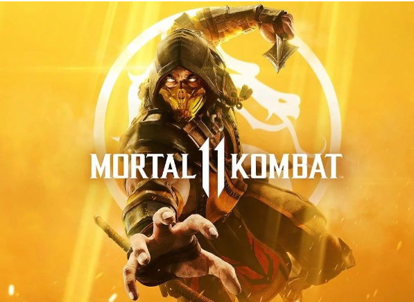

Mortal Kombat 11

Mortal Kombat 11 é um jogo eletrônico de luta desenvolvido pela NetherRealm
Studios e publicado pela Warner Bros. Interactive Entertainment. É a décima
primeira edição principal da série de jogos eletrônicos de luta, Mortal Kombat,
e uma continuação direta de Mortal Kombat X (2015). O jogo foi lançado em
23 de abril de 2019, para Microsoft Windows, Nintendo Switch, PlayStation 4 e Xbox One.
Voltar